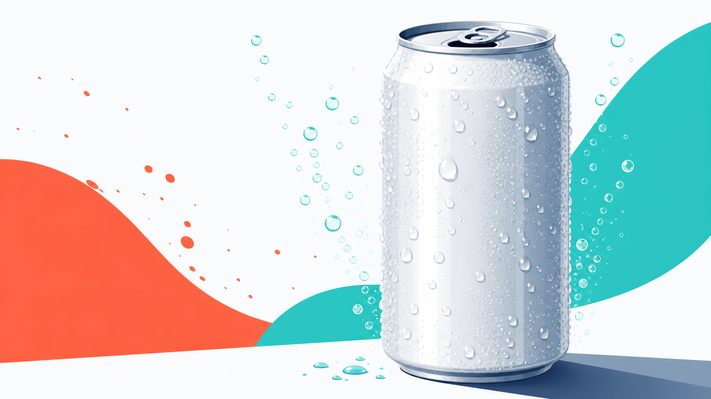
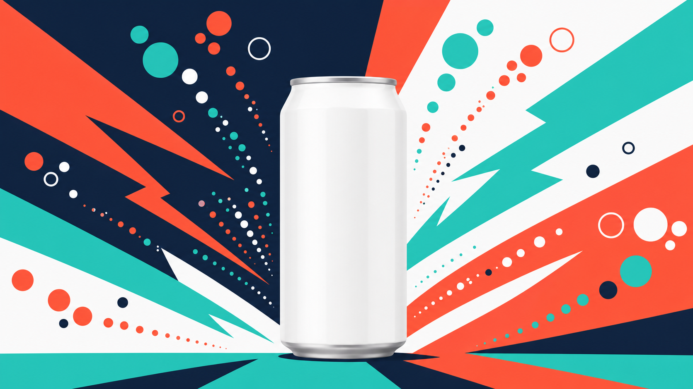

트렌드 조사부터 썸네일 컨셉까지, 한 주치 SNS 콘텐츠를 하나의 흐름으로 뽑아냅니다.
0. 이 과정 한눈에
- 대상: 콘텐츠 마케터, SNS 담당, 크리에이티브 실무자
- 소요 시간: 약 150분
- 선수 과정: C1(하네스 첫걸음)
- 사용 하네스:
content-harness(오케스트레이터 = 팀장) - 얻어가는 것(산출물): 1주 콘텐츠 캘린더, 대본 5개, 썸네일 컨셉 3안, 제목·해시태그 세트, 그리고 다음에도 다시 쓸 수 있는 나만의 콘텐츠 하네스
이 과정의 핵심 그림 하나: 앞사람이 끝낸 결과를 뒷사람이 받아 이어가는 순차 협업(파이프라인). 조사 → 기획 → 대본 → 썸네일 → SEO가 릴레이처럼 이어집니다.
1. 왜 이 하네스인가
SNS 콘텐츠 한 편을 만들려면 손이 참 많이 갑니다. 요즘 뭐가 뜨는지 찾아보고, 주제를 잡고, 대본을 쓰고, 썸네일을 구상하고, 마지막에 제목과 해시태그까지 다듬어야 하죠. 한 주치 5편이면 이 과정을 다섯 번 반복합니다.
Before (지금)
- 트렌드 검색 따로, 기획 회의 따로, 대본 작성 따로, 디자인 요청 따로, 해시태그 정리 따로.
- 단계마다 사람이 갈아타며 앞뒤 맥락을 다시 설명. 반나절이 훌쩍.
After (콘텐츠 하네스)
- "콘텐츠·SNS 제작 하네스를 구성해줘" 한 문장.
- 팀원들(조사→콘텐츠 제작→썸네일→SEO)이 릴레이로 이어받아, 1주 캘린더 + 대본 5개 + 썸네일 컨셉 + 해시태그를 한 번에 정리해 줍니다.
- 사람은 "출발 브리프"와 "중간 점검"만. 반복 작업은 팀이 맡습니다.
한 가지 미리 안심시켜 드릴게요. AI는 같은 요청에도 매번 조금씩 다르게 답합니다(비결정성). 어제 뽑은 대본과 오늘 뽑은 대본의 표현이 달라도 고장이 아닙니다. 그래서 우리는 결과를 그대로 믿지 않고 한 번은 의심하고 점검합니다. 이 습관이 이 과정 내내 반복됩니다.
2. 개념 이해
파이프라인 = 릴레이 계주
파이프라인은 육상 **계주(릴레이)**와 똑같습니다. 앞 주자가 바통(=산출물)을 넘겨야 다음 주자가 달립니다. 조사 결과가 있어야 기획을 하고, 기획이 있어야 대본을 쓰고, 대본이 있어야 썸네일 컨셉을 잡습니다. 앞 단계 산출물이 다음 단계의 입력이 되는 순차 협업입니다.
트렌드 조사 ──▶ 콘텐츠 기획 ──▶ 대본 작성 ──▶ 썸네일 컨셉 ──▶ 제목·해시태그(SEO)
(리서처) (콘텐츠 크리에이터) (비주얼 디자이너) (SEO 마무리)
플랫폼별 포맷 — 같은 소재, 다른 그릇
같은 메시지라도 플랫폼마다 담는 그릇이 다릅니다.
| 플랫폼 | 성격 | 길이·형식 | 핵심 |
|---|---|---|---|
| 숏폼(릴스·쇼츠) | 빠른 소비 | 15~60초 세로 영상 | 3초 안에 붙잡는 훅, 자막 필수 |
| 유튜브(롱폼) | 깊은 시청 | 3~10분 | 스토리텔링, 도입에서 볼 이유 제시 |
| 인스타(피드·카드뉴스) | 저장·공유 | 이미지 6~10장 | 시각 정보, 저장 유도 |
| 블로그(아티클) | 검색 유입 | 글 중심 | 정보 깊이, 키워드, 솔직함 |
대본 구조 — 훅 → 본문 → CTA
어느 플랫폼이든 대본의 뼈대는 같습니다.
- 훅: 3초 안에 "어? 뭐지?" 하고 붙잡는 첫 문장.
- 본문: 핵심 메시지를 짧고 명확하게.
- CTA(행동 유도): 저장·구독·댓글·구매처 확인 등 다음 행동을 콕 집어 안내.
썸네일 컨셉과 텍스트 분리
썸네일은 **비주얼 디자이너(팀원)**가 codex-image 업무 매뉴얼로 컨셉 이미지를 만듭니다. 이때 중요한 원칙 하나: 이미지 안에는 글자를 넣지 않습니다. AI가 그린 글자는 오탈자가 나기 쉽기 때문입니다. 썸네일 문구·자막은 이미지가 나온 뒤 편집 단계에서 따로 얹습니다. (그림 따로, 글자 따로)
제목·해시태그 SEO
파이프라인의 마지막 주자는 검색·추천에 잘 걸리도록 다듬습니다. 핵심 키워드를 제목 앞쪽에 두고, 해시태그는 큰 태그(#다이어트)·중간 태그(#제로슈거)·브랜드 태그(#제로톡)를 섞습니다.
3. 사용할 하네스 — content-harness
파이프라인을 이끄는 팀장(오케스트레이터)이 content-harness입니다. 팀장이 아래 팀원(에이전트)을 릴레이 순서로 엮습니다.
팀 구성표
| 순서 | 팀원(역할) | 광고팀 비유 | 하는 일 | 넘기는 바통(산출물) |
|---|---|---|---|---|
| 1 | 리서처 | 조사 담당 | 최신 트렌드·소재 조사 | 트렌드 요약 |
| 2 | 콘텐츠 크리에이터 | 콘텐츠/SNS 담당 | 1주 기획 + 대본 5개 | 캘린더 + 대본 |
| 3 | 비주얼 디자이너 | 디자이너 | 썸네일 컨셉 생성(codex-image) | 썸네일 컨셉 3안 |
| 4 | (SEO 마무리) | 콘텐츠 크리에이터가 겸함 | 제목·해시태그 최적화 | 제목·해시태그 세트 |
팀원 = 에이전트, 팀장 = 오케스트레이터, 업무 매뉴얼 = 스킬, 브리프 = 지시 문장입니다. 앞사람 결과를 뒷사람이 받는 순차 협업이 파이프라인입니다.
트리거 프롬프트(팀장 부르기)
콘텐츠·SNS 제작 하네스를 구성해줘. 최신 트렌드를 조사하고, 그걸 바탕으로 한 주치 콘텐츠를 기획하고, 각 콘텐츠의 대본을 쓰고, 썸네일 컨셉을 생성(codex-image)하고, 마지막에 제목/해시태그를 SEO 최적화하는 순차 파이프라인 팀이 필요해. '1주 콘텐츠 캘린더 + 대본 5개 + 썸네일 컨셉 + 해시태그 세트'를 줘.
이 브리프에는 좋은 요청문의 3요소가 다 들어 있습니다 — 도메인(콘텐츠·SNS 제작)·역할(조사→기획→대본→썸네일→SEO)·산출물(캘린더+대본5+썸네일+해시태그).
3-B. 이 하네스를 직접 만들기 — /harness 구성
이 과정의 콘텐츠 하네스도, harness 플러그인에게 아래 한 문장을 주면 기획부터 썸네일까지 순서대로 이어지는 파이프라인 팀으로 자동 생성됩니다. 팀장(오케스트레이터)·팀원(에이전트)·업무 매뉴얼(스킬)이 한 번에 만들어집니다. 여러분도 아래 방법으로 직접 만들 수 있습니다.
harness 플러그인은 C1(하네스 첫걸음) 에서 이미 설치했다고 가정합니다. 아직이라면 C1의 설치 안내를 먼저 따르세요(보통 관리자가 미리 설치해 둡니다).
이 하네스를 만드는 구성 프롬프트 — 그대로 입력하세요
하네스 구성해줘. SNS 콘텐츠를 기획부터 썸네일까지 순서대로 만드는 파이프라인 팀이 필요해. 트렌드를 조사하는 리서처 → 대본을 쓰는 콘텐츠 크리에이터 → 썸네일 컨셉을 만드는 비주얼 디자이너 → 제목·해시태그를 SEO로 다듬는 순서야. 1주 콘텐츠 캘린더와 대본, 썸네일 컨셉, 해시태그를 결과로 줘.
무엇이 만들어지나요
| 종류 | 생성물 |
|---|---|
| 팀원(에이전트) | researcher(리서처), content-creator(콘텐츠 크리에이터), visual-designer(비주얼 디자이너) |
| 업무 매뉴얼(스킬) | market-research, content-production, visual-concepting |
| 팀장(오케스트레이터) | content-harness — 파이프라인(순차 제작) |
harness는 6단계(도메인 분석 → 팀 설계 → 에이전트 생성 → 스킬 생성 → 통합 → 검증)로 팀을 만들고,
CLAUDE.md에 트리거 포인터를 등록합니다. 한 번 만든 뒤에도 "리서처를 하나 더 추가해줘"처럼 피드백을 주면 계속 진화합니다. 실제로 이렇게 생성된 결과물이 이 저장소의.claude/agents/·.claude/skills/에 들어 있습니다.
만든 다음에는 아래 4장 실습의 트리거 프롬프트로 이 팀을 실행하면 됩니다.
4. 실습 — 단계별
시나리오: 신제품 음료 "제로톡"(제로 슈거 스파클링, 예시 브랜드)의 1주 SNS 콘텐츠를 만듭니다.
단계 1 · 하네스 구성
위 3장 트리거 프롬프트를 그대로 붙여넣습니다.
기대 결과: 팀장이 리서처 → 콘텐츠 크리에이터 → 비주얼 디자이너 → SEO 순서의 파이프라인 팀을 제안.
단계 2 · 브랜드·플랫폼·주제 입력
브랜드는 '제로톡'(제로 슈거 스파클링 음료)이야. 타깃은 20~30대 다이어트·건강 음료 관심층. 이번 주 테마는 '여름 리프레시'. 플랫폼은 인스타 릴스, 유튜브 쇼츠, 인스타 카드뉴스, 유튜브 롱폼, 네이버 블로그 5개로 하루 하나씩. 각 콘텐츠는 훅→본문→CTA 구조로 대본을 써줘.
기대 결과: 리서처가 여름·제로슈거 관련 트렌드 소재를 정리해 콘텐츠 크리에이터에게 넘김.
단계 3 · 파이프라인 흐름 관찰
각 단계 산출물이 다음 단계 입력으로 넘어가는지 눈으로 확인합니다. 중간 산출물을 건너뛰지 말고 한 번씩 점검하세요. (앞 단계가 어긋나면 뒤가 전부 어긋납니다)
기대 결과: 조사 요약 → 캘린더 → 대본 → 썸네일 컨셉 → 제목·해시태그가 순서대로 쌓임.
단계 4 · 썸네일 컨셉 생성
썸네일 컨셉은 3안으로. 청량 제품 클로즈업, 여름 라이프스타일, 대담한 컬러 배경으로 서로 다르게. 통일 팔레트로, 이미지 안에는 글자를 절대 넣지 마. 문구는 나중에 편집으로 얹을 거야.
기대 결과: 비주얼 디자이너가 codex-image로 텍스트 없는 썸네일 컨셉 3안 생성.
단계 5 · 제목·해시태그 SEO
각 콘텐츠의 제목과 해시태그를 SEO 최적화해줘. 핵심 키워드를 제목 앞쪽에, 해시태그는 큰 태그·중간 태그·브랜드 태그를 섞어서.
기대 결과: 콘텐츠 5개 각각의 제목 1개 + 해시태그 세트.
단계 6 · 캘린더로 정리 & 검증
지금까지 결과를 요일 × 플랫폼 × 콘텐츠 유형 × 주제 × 상태 표로 정리해줘.
기대 결과: 1주 콘텐츠 캘린더 완성. 이때 한 번은 의심하며 점검하세요 — 플랫폼마다 포맷이 다른가? 썸네일에 글자가 섞이지 않았나? 훅이 정말 3초 안에 붙잡나?
단계 요약 표
| 단계 | 입력(브리프) | 담당 팀원 | 기대 산출물 |
|---|---|---|---|
| 1 | 트리거 프롬프트 | 팀장 | 파이프라인 팀 구성 |
| 2 | 브랜드·플랫폼·주제 | 리서처 | 트렌드 요약 |
| 3 | (앞 결과 전달) | 콘텐츠 크리에이터 | 캘린더·대본 초안 |
| 4 | 썸네일 지시 | 비주얼 디자이너 | 썸네일 컨셉 3안 |
| 5 | SEO 지시 | 콘텐츠 크리에이터 | 제목·해시태그 |
| 6 | 정리 지시 | 팀장 | 1주 캘린더 + 검증 |
5. 완성형 사례
아래는 이 하네스를 "제로톡"으로 실제 돌렸을 때 나올 법한 결과의 발췌입니다. 전문은 별도 파일에 있습니다.
📄 전문 보기: C6 콘텐츠 캘린더 (완성형 사례) — 1주 캘린더 + 대본 5개 + 제목·해시태그 전체
발췌 1 · 1주 캘린더 (일부)
| 요일 | 플랫폼 | 콘텐츠 유형 | 주제 |
|---|---|---|---|
| 월 | 인스타 릴스 | 15초 훅 영상 | "설탕 0인데 이 맛?" 첫 반응 |
| 화 | 유튜브 쇼츠 | 45초 정보형 | 제로 슈거 3종 블라인드 비교 |
| 수 | 인스타 카드뉴스 | 정보 카드 6장 | 여름철 당 줄이기 습관 5가지 |
발췌 2 · 대본 구조 예시 (릴스)
- 훅: "설탕 0g이라길래 맛없을 줄 알았는데…"
- 본문: 한 모금 리액션 + 자막 "탄산 빵빵 / 뒷맛 깔끔 / 칼로리 0"
- CTA: "여름 음료 갈아탈 사람 저장 필수. 편의점에서 '제로톡' 찾아보세요."
발췌 3 · 썸네일 컨셉 3안
썸네일은 codex-image로 만든 텍스트 없는 컨셉 이미지입니다. (문구는 편집에서 별도로 얹습니다.)

청량 제품 클로즈업 컨셉 컨셉 1 — 청량 제품 클로즈업: 물방울과 탄산 기포가 살아있는 캔 클로즈업 (릴스·블로그용)여름 라이프스타일 컨셉 컨셉 2 — 여름 라이프스타일: 햇살 가득한 풀사이드에서 캔을 든 손 (브이로그용)

대담 컬러 배경 컨셉 컨셉 3 — 대담 컬러 배경: 컬러블록 위 캔을 주인공으로 세운 팝 스타일 (쇼츠·카드뉴스용)위 사례의 수치·문구는 모두 예시 데이터입니다. 실제로는 자사 브랜드·톤·데이터로 바꿔 씁니다.
6. 자주 하는 실수
- 모든 플랫폼에 같은 포맷을 그대로 복사 → 플랫폼마다 그릇이 다릅니다. "릴스는 세로 15초, 블로그는 검색 키워드 중심"처럼 플랫폼별 최적화를 브리프에 명시하세요.
- 썸네일 이미지에 글자를 넣어달라고 요청 → AI가 그린 글자는 오탈자가 잦습니다. 이미지는 텍스트 없이, 문구는 편집 단계에서 따로 얹으세요.
- 파이프라인 중간 산출물을 안 보고 끝만 확인 → 앞 단계가 어긋나면 뒤가 전부 어긋납니다. 단계마다 한 번씩 점검하세요.
- 결과를 그대로 믿고 바로 발행 → AI는 매번 조금씩 다르게 답합니다. 한 번은 의심하고 훅·CTA·해시태그를 사람 눈으로 검증하세요.
7. 체크리스트 & 자기평가
완주 체크리스트
자기평가 루브릭 요약 (통과 기준 70%)
| 평가 항목 | 미흡 | 보통 | 우수 |
|---|---|---|---|
| 파이프라인 구성 | 단계 전달 이해 못함 | 순서는 만듦 | 단계 간 전달을 설명·활용 |
| 플랫폼 최적화 | 같은 포맷 복붙 | 일부만 구분 | 플랫폼별로 차별화 |
| 썸네일·대본 품질 | 훅/CTA 없음 | 구조는 있음 | 완성도·매력 높음 |
| SEO·캘린더 | 정리 안 됨 | 제목만 | 해시태그·제목·캘린더 정돈 |
8. 다음 과정
정지 이미지 콘텐츠를 파이프라인으로 뽑는 흐름을 익혔다면, 다음은 영상입니다. C7에서는 최신 Seedance로 숏폼 광고 영상을 대본부터 스토리보드·샷 프롬프트까지 팀으로 만듭니다.
- 이전 과정: C5 · 미디어·캠페인 플래닝 하네스
- 다음 과정: C7 · Seedance 영상 콘텐츠 하네스